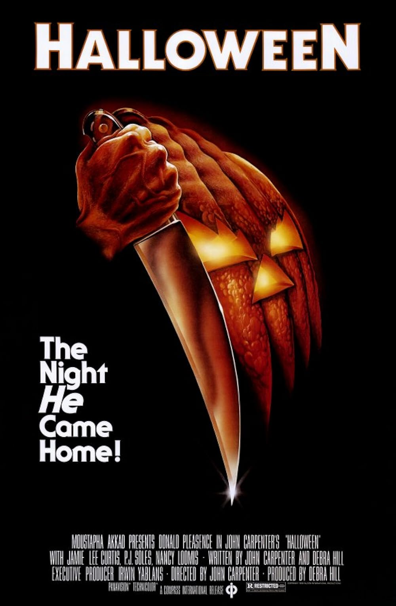
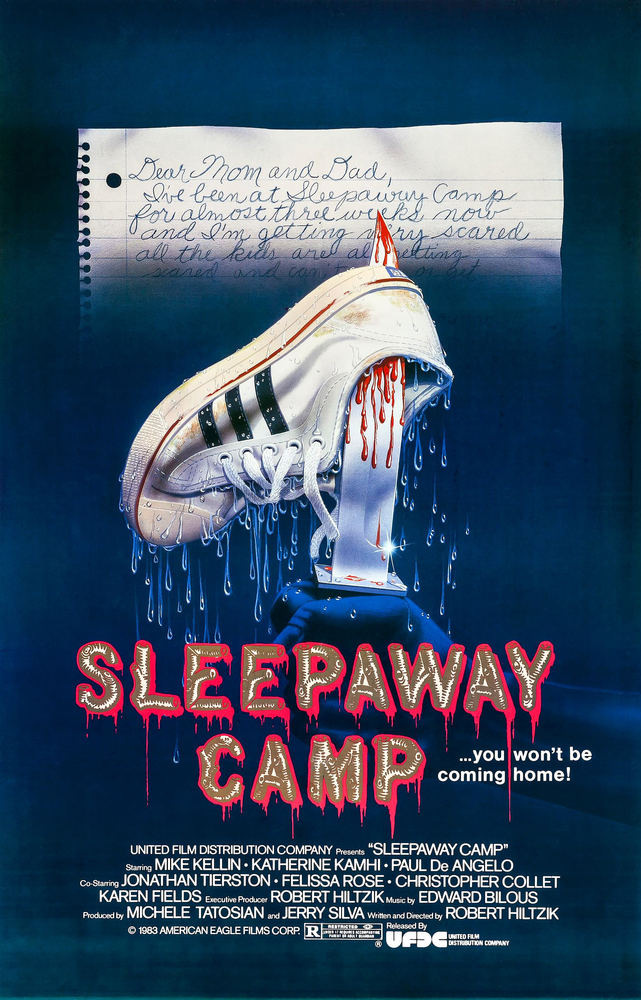

The Thing (1982)
The Thing (1982) is a sci-fi horror movie directed by John Carpenter that takes place at an isolated research station in Antarctica. After the team encounters an alien organism that can perfectly imitate humans, paranoia spreads and no one knows who to trust. Instead of relying on jumpscares, the movie focuses on tension, isolation, and the fear of not knowing who is still human, which is what makes it so effective and unsettling.

Halloween (1978)
Halloween is also a classic slasher film directed by John Carpenter (you can see a pattern here) that follows a masked killer, Michael Myers, as he stalks babysitters on Halloween night. The movie keeps things simple but effective, using long quiet moments, creepy music, and a sense of inevitability to build tension. Instead of relying on gore, Halloween creates fear through atmosphere and suspense, which is why it’s still considered one of the most influential horror movies ever made.

Sleepaway Camp (1983)
Sleepaway Camp is a cult-classic slasher set at a summer camp, where a series of strange and violent deaths start to occur. The movie follows Angela, a quiet and awkward camper, as the atmosphere becomes more unsettling with each incident. While it may look like a typical camp horror at first, Sleepaway Camp stands out for its uncomfortable tone and shocking ending, which is why it’s still talked about and remembered today.
Incantation (2022)
Incantation is a found-footage horror movie from Taiwan that follows a mother trying to protect her daughter from a powerful curse. The film breaks the fourth wall by directly involving the audience, which makes the experience feel more immersive and unsettling. Instead of relying on jumpscares, Incantation builds fear through atmosphere, repetition, and psychological pressure, making it especially disturbing and memorable.

Midsommar (2019)
Midsommar is a psychological horror movie directed by Ari Aster that takes place almost entirely in daylight, which already makes it feel unsettling. The story follows a group of friends who travel to a remote Swedish festival that slowly reveals itself to be far more disturbing than it seems. Rather than using darkness or jumpscares, Midsommar relies on emotional tension, disturbing imagery, and a creeping sense of unease, making the horror feel inescapable.